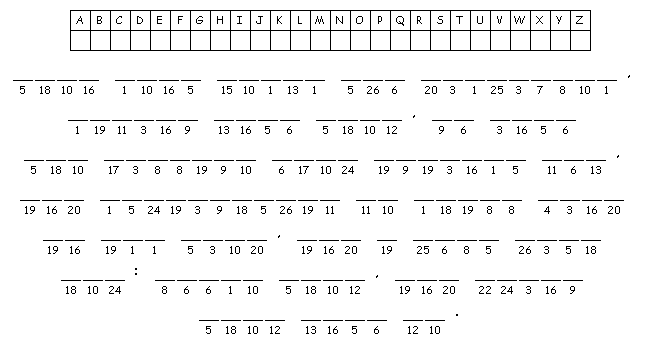
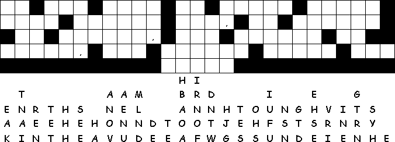

This
week's lessons: Matthew
21:1-11, Psalm
118:1-2, 19-29,
Isaiah
50:4-9a, Psalm
31:9-16, Philippians
2:5-11, Matthew
26:14-27:66 or
Matthew
27:11-54
Middle-School Pew-work
The procession of the Palms is an
ancient “victory dance”. What “victories” do
you celebrate in your life, and how do you celebrate
them?________________________________________________________________
_______________________________________________________________________________________
_______________________________________________________________________________________
_______________________________________________________________________________________
_______________________________________________________________________________________
_______________________________________________________________________________________
_______________________________________________________________________________________
_______________________________________________________________________________________
_______________________________________________________________________________________
_______________________________________________________________________________________
A H E A D C G T D
|
  |
|
(Matthew 21:9) The crowds that went ahead of him
and that followed were shouting, "Hosanna to the Son of
David! Blessed is the one who comes in the name of the Lord!
Hosanna in the highest heaven!" (NRSV) |
Next
week: EASTER (no bible study class): Jeremiah
31:1-6
or Acts
10:34-43,
Psalm
118:1-2, 14-24,
Colossians
3:1-4 or Acts
10:34-43, John
20:1-18 or Matthew
2
Week following: Acts 2:14a, 22-32, Psalm 16, 1 Peter 1:3-9, John 20:19-31